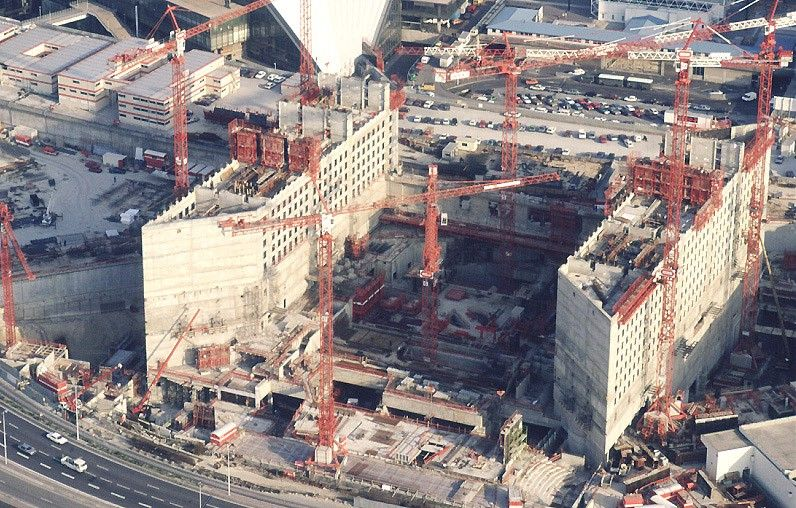

ARCHE DE LA DEFENSE
Deux présidents de la République ont pour projet de marquer l'axe historique de Paris par une œuvre architecturale monumentale : Georges Pompidou (avec un projet de Ieoh Ming Pei, un projet d'Émile Aillaud, et surtout la Tour Lumière Cybernétique de Nicolas Schöffer), et Valéry Giscard d'Estaing (avec un projet de Jean Willerval)2. C'est finalement le président François Mitterrand qui concrétise ce projet, sous le nom de projet Tête Défense. Serge Antoine, conseiller référendaire à la Cour des comptes et passionné de futurologie, est chargé de préciser le programme de ce projet. Il évalue dans son rapport remis en mars 1982, à deux milliards le coût de l'opération, auxquels il faut ajouter 276 millions pour la préparation du terrain par l'EPAD et 300 de manque à gagner3. Le 7 juillet 1982, Roger Quilliot, ministre de l'Urbanisme et du Logement, et Robert Lion, président de l'EPAD, lancent officiellement un concours international d'architecture. Ce concours réunit 424 projets anonymes venus du monde entier, dont quatre sont sélectionnés par le jury et présentés au président. Le 25 mai 1983, François Mitterrand, se ralliant à la proposition du jury, retient le projet de l'architecte Danois Johan Otto von Spreckelsen (professeur à l'Académie royale des beaux-arts du Danemark, architecte inconnu sans agence ni associé, mais qui a séduit par sa forme fétiche sur laquelle il travaille depuis de nombreuses années, le cube ouvert pour former une grande arche4). Pour répondre aux contraintes techniques, Spreckelsen s'associe à l'ingénieur-concepteur danois Erik Reitzel qui s'aperçoit que pour installer les fondations de la structure de l'Arche, il faut respecter l'autoroute et les lignes ferroviaires. Spreckelsen a l'idée alors de placer le cube pas vraiment dans l'axe historique de Paris, avec lequel il forme un angle de 6,30°, donnant ainsi de la profondeur à son monument5.Les relations entre Spreckelsen et ses clients (ministère de l'Équipement, EPAD, la société qui gère le centre de communication et la Caisse des dépôts et consignations) sont difficiles. Le règlement du concours prévoie que si le vainqueur est étranger il devra être épaulé par une équipe technique française, familière des rouages administratifs nationaux. L'architecte danois décide en janvier 1984 de confier la responsabilité de la construction à Paul Andreu et de garder la partie conception. Conduits par l'entreprise française de travaux publics Bouygues, les travaux débutent réellement en 1985. Deux mille ouvriers qualifiés travaillent sur ce chantier (deux d'entre eux perdent la vie lors de la construction des structures supérieures). En avril 1986, le nouveau gouvernement de Jacques Chirac remet en cause le caractère public du bâtiment et supprime le Carrefour International de la Communication qui était l'âme du projet6. Spreckelsen, ulcéré par la dénaturation de son projet, démissionne et meurt quelques mois plus tard. La construction des deux piliers dure un an environ, deux équipes indépendantes travaillant en parallèle sur chacun d'eux. L'inauguration a lieu en juillet 1989, deux ans après la mort de Johan Otto von Spreckelsen. L'an 1989 est marqué par des célébrations d'envergure telles que les cent ans de l'inauguration de la Tour Eiffel, le bicentenaire de la Révolution et de la déclaration des droits de l'homme et du citoyen (l'ouverture au public le 26 août 1989 intervient justement pour célébrer ce dernier évènement). Le sommet du G7 intervient au même moment.
Johan Otto von Spreckelsen et Erik Reitzel utilisent des matériaux de grande qualité pour l'œuvre : béton précontraint à base de fumée de silice, alliant solidité et flexibilité (une densité de 350 kg/m3 contre 120 kg/m3 pour un pont normal)[réf. nécessaire], 2,5 ha de verre anti-reflets, 3,5 ha du même type de marbre que celui utilisé par Michel-Ange pour ses œuvres : le marbre de Carrare20. Trop poreux, le marbre absorbe l’eau, se bombe et se décroche. Le marbre gris des façades nord et sud a dû être remplacé par un granit dix ans après la construction, et le marbre blanc des façades est et ouest connaît le même problème14. Sur ses faces extérieures, la Grande Arche est recouverte de plaques de verre de 5 cm d'épaisseur, traitées spécialement pour empêcher toute déformation optique et résister à des vents de forte puissance. Les autres parements sont recouverts de plaques de marbre blanc de Carrare et de granite gris. Elle est montée sur douze piliers qui s'enfoncent à trente mètres dans le sol et qui supportent sa masse de 300 000 tonnes. Le monument possède une mégastructure conçue de telle sorte que les forces soient exercées dans toutes les directions : tel un dé, la Grande Arche pourrait reposer sur n'importe quelle face[réf. nécessaire]. Chaque face horizontale du cube est composée de quatre fois quatre traverses de béton de 75 mètres de long.